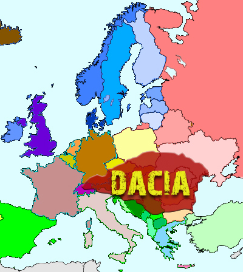

La Moldavie fait partie intégrante de l'Europe avec une histoire riche et expressive. Ce pays, situé dans la zone de contact de divers mouvements culturels et historiques - les Carpates des Balkans, l’Europe centrale et l’Eurasie - tout au long de son histoire millénaire, absorbe harmonieusement les diverses traditions culturelles des peuples proto-indo-européens et les plus anciens indo-européens, y compris les Thraciens, les Slaves, les Celtes, Goths, Huns, etc., ont ensuite formé leurs caractéristiques spécifiques et uniques.

Sur le territoire de la République de Moldavie, il existe de nombreux sites historiques et archéologiques (environ 8 000), dont l'importance culturelle et historique est précieuse pour l'ensemble du territoire européen. Le territoire de la Moldavie est habité depuis l'Antiquité. Les sites archéologiques confirment l'existence de personnes dans ces lieux depuis le paléolithique supérieur (il y a environ 500 000 ans). Au tournant du Ve - IVe millénaire av. J.-C., pendant l'énéolithique, la culture Cucuteni-Tripoli fut formée - l'une des sociétés antiques les plus importantes sans précédent dans le domaine de l'art de cette époque.


Aux VI - I siècles av. J.-C., la civilisation des Geto-Daces se répandit dans tout le Moldova. Depuis 105 avant JC, la population locale à la suite de la conquête de la Dacie par l'empereur Trajan, ayant adopté la langue et développé la culture de l'Empire romain, fut romanisée.
En l'an 271, sous le règne de l'empereur Aurélien, après le retrait des légions romaines, commence l'ère de la «grande migration des peuples» (Goths, Huns, Avars, Slaves, etc.), qui aboutit à la fondation en 1359 de l'État féodal moldave dirigé par Bohdan I.
Depuis 1812, la partie orientale de la Moldavie, située entre les rivières Prout et Dniestr, appelée Besarabia, a été annexée par l'empire russe en vertu du traité de paix russo-turc conclu à Bucarest et reçoit le statut de province russe.
En 1918, l'autorité suprême de la Bessarabie - Sfatul Tsarii décida de rejoindre la Roumanie. Cela dure jusqu'en 1940, date à laquelle, conformément au pacte Ribbentrop - Molotov, en 1939, le pays est inclus dans l'Union soviétique.
La Moldavie a existé en tant qu’unité territoriale au sein de l’URSS jusqu’à la dernière décennie du 20e siècle, c’est-à-dire jusqu'à l'effondrement de l'empire soviétique.
Le 27 août 1991, la République de Moldova est devenue un État indépendant et souverain.